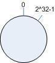

个人总结
主机根据ip地址和虚拟机的编号 host_ip#id生成hash值，排列成环。
需要缓存的对象也用同样的hash算法生成hash值，排列成环。
然后对象存储在顺时针离它最近的主机上。
单调性体现在:
无论是新增主机还是删除主机,需要改变位置的都是离那台主机最近的那些节点,其他节点不需要改变位置。
原文
基本场景
比如你有 N 个 cache 服务器（后面简称 cache ），那么如何将一个对象 object 映射到 N 个 cache 上呢，你很可能会采用类似下面的通用方法计算 object 的 hash 值，然后均匀的映射到到 N 个 cache ；
求余算法: hash(object)%N
一切都运行正常，再考虑如下的两种情况；
1 一个 cache 服务器 m down 掉了（在实际应用中必须要考虑这种情况），这样所有映射到 cache m 的对象都会失效，怎么办，需要把 cache m 从 cache 中移除，这时候 cache 是 N-1 台，映射公式变成了 hash(object)%(N-1) ；
2 由于访问加重，需要添加 cache ，这时候 cache 是 N+1 台，映射公式变成了 hash(object)%(N+1) ；
1 和 2 意味着什么？这意味着突然之间几乎所有的 cache 都失效了。对于服务器而言，这是一场灾难，洪水般的访问都会直接冲向后台服务器；
再来考虑第三个问题，由于硬件能力越来越强，你可能想让后面添加的节点多做点活，显然上面的 hash 算法也做不到。
有什么方法可以改变这个状况呢，这就是 consistent hashing...
hash 算法和单调性
Hash 算法的一个衡量指标是单调性（ Monotonicity ），定义如下：
单调性是指如果已经有一些内容通过哈希分派到了相应的缓冲中，又有新的缓冲加入到系统中。哈希的结果应能够保证原有已分配的内容可以被映射到新的缓冲中去，而不会被映射到旧的缓冲集合中的其他缓冲区。
容易看到，上面的简单求余算法 hash(object)%N 难以满足单调性要求。
Consistent Hashing 一致性hash的原理
consistent hashing 是一种 hash 算法，简单的说，在移除 / 添加一个 cache 时，它能够尽可能小的改变已存在key 映射关系，尽可能的满足单调性的要求。
1. 环形hash 空间
考虑通常的 hash 算法都是将 value 映射到一个 32 为的 key 值，也即是 0~2^32-1 次方的数值空间；我们可以将这个空间想象成一个首（ 0 ）尾（ 2^32-1 ）相接的圆环，如下面图 1 所示的那样。

circle space
2. 把需要缓存的内容(对象)映射到hash 空间
接下来考虑 4 个对象 object1~object4 ，通过 hash 函数计算出的 hash 值 key 在环上的分布如图 2 所示。
hash(object1) = key1;
… …
hash(object4) = key4;

object
3 .把服务器(节点)映射到hash 空间
Consistent hashing 的基本思想就是将对象和 cache 都映射到同一个 hash 数值空间中，并且使用相同的 hash算法。
假设当前有 A,B 和 C 共 3 台服务器(节点)，那么其映射结果将如图 3 所示，他们在 hash 空间中，以对应的 hash 值排列。
一般的方法可以使用 服务器(节点) 机器的 IP 地址或者机器名作为 hash输入。
hash(cache A) = key A;
… …
hash(cache C) = key C;

cache
4 .把对象映射到cache
现在cache和对象都已经通过同一个 hash 算法映射到 hash 数值空间中了，接下来要考虑的就是如何将对象映射到 cache 上面了。
在这个环形空间中，如果沿着顺时针方向从对象的 key 值出发，直到遇见一个 cache ，那么就将该对象存储在这个 cache 上，因为对象和 cache 的 hash 值是固定的，因此这个 cache 必然是唯一和确定的。这样不就找到了对象和 cache 的映射方法了吗？！
依然继续上面的例子，那么根据上面的方法，对象 object1 将被存储到 cache A 上； object2 和object3 对应到 cache C ； object4 对应到 cache B ；
5. 考察cache 的变动
前面讲过，通过 hash 然后求余的方法带来的最大问题就在于不能满足单调性，当 cache 有所变动时， cache会失效，进而对后台服务器造成巨大的冲击，现在就来分析分析 consistent hashing 算法。
- 5.1 移除 cache
考虑假设 cache B 挂掉了，根据上面讲到的映射方法，这时受影响的将仅是那些沿 cache B 逆时针遍历直到下一个 cache （ cache C ）之间的对象，也即是本来映射到 cache B 上的那些对象。
因此这里仅需要变动对象 object4 ，将其重新映射到 cache C 上即可；参见图 4 。
图 4 Cache B 被移除后的 cache 映射 - 5.2 添加 cache
再考虑添加一台新的 cache D 的情况，假设在这个环形 hash 空间中， cache D 被映射在对象 object2 和object3 之间。这时受影响的将仅是那些沿 cache D 逆时针遍历直到下一个 cache （ cache B ）之间的对象（它们是也本来映射到 cache C 上对象的一部分），将这些对象重新映射到 cache D 上即可。
因此这里仅需要变动对象 object2 ，将其重新映射到 cache D 上；参见图 5 。

图 5 添加 cache D 后的映射关系
6 .虚拟节点
考量 Hash 算法的另一个指标是平衡性 (Balance) ，定义如下：
平衡性
平衡性是指哈希的结果能够尽可能分布到所有的缓冲中去，这样可以使得所有的缓冲空间都得到利用。
hash 算法并不是保证绝对的平衡，如果 cache 较少的话，对象并不能被均匀的映射到 cache 上，比如在上面的例子中，仅部署 cache A 和 cache C 的情况下，在 4 个对象中， cache A 仅存储了 object1 ，而 cache C 则存储了object2 、 object3 和 object4 ；分布是很不均衡的。
为了解决这种情况， consistent hashing 引入了“虚拟节点”的概念，它可以如下定义：
“虚拟节点”（ virtual node ）是实际节点在 hash 空间的复制品（ replica ），一实际个节点对应了若干个“虚拟节点”，这个对应个数也成为“复制个数”，“虚拟节点”在 hash 空间中以 hash 值排列。
仍以仅部署 cache A 和 cache C 的情况为例，在图 4 中我们已经看到， cache 分布并不均匀。现在我们引入虚拟节点，并设置“复制个数”为 2 ，这就意味着一共会存在 4 个“虚拟节点”， cache A1, cache A2 代表了 cache A； cache C1, cache C2 代表了 cache C ；假设一种比较理想的情况，参见图 6 。

图 6 引入“虚拟节点”后的映射关系
此时，对象到“虚拟节点”的映射关系为：
objec1->cache A2 ； objec2->cache A1 ； objec3->cache C1 ； objec4->cache C2 ；
因此对象 object1 和 object2 都被映射到了 cache A 上，而 object3 和 object4 映射到了 cache C 上；平衡性有了很大提高。
引入“虚拟节点”后，映射关系就从 { 对象 -> 节点 } 转换到了 { 对象 -> 虚拟节点 } 。查询物体所在 cache 时的映射关系如图 7 所示。

图 7 查询对象所在 cache
“虚拟节点”的 hash 计算可以采用对应节点的 IP 地址加数字后缀的方式。例如假设 cache A 的 IP 地址为202.168.14.241 。
引入“虚拟节点”前，计算 cache A 的 hash 值：
Hash(“202.168.14.241”);
引入“虚拟节点”后，计算“虚拟节”点 cache A1 和 cache A2 的 hash 值：
Hash(“202.168.14.241#1”); // cache A1
Hash(“202.168.14.241#2”); // cache A2
以下时代码实现DEMO
#!/usr/bin/env python# -*- coding: utf-8 -*-from zlib import crc32import memcacheclass HashConsistency(object): def__init__(self, nodes=None, replicas=5): # 虚拟节点与真实节点对应关系 self.nodes_map = [] # 真实节点与虚拟节点的字典映射self.nodes_replicas = {} # 真实节点 self.nodes = nodes # 每个真实节点创建的虚拟节点的个数 self.replicas = replicas ifself.nodes: for node in self.nodes: self._add_nodes_map(node) self._sort_nodes() def get_node(self, key): """ 根据KEY值的hash值，返回对应的节点 算法是： 返回最早比key_hash大的节点 """ key_hash = abs(crc32(key)) #print '(%s' % key_hash fornode in self.nodes_map: if key_hash > node[0]: continue return node return None def add_node(self, node): # 添加节点self._add_nodes_map(node) self._sort_nodes() def remove_node(self, node): # 删除节点 if node not inself.nodes_replicas.keys(): pass discard_rep_nodes = self.nodes_replicas[node] self.nodes_map = filter(lambda x: x[0] notin discard_rep_nodes, self.nodes_map) def _add_nodes_map(self, node): # 增加虚拟节点到nodes_map列表 nodes_reps = [] for iin xrange(self.replicas): rep_node = '%s_%d' % (node, i) node_hash = abs(crc32(rep_node)) self.nodes_map.append((node_hash, node)) nodes_reps.append(node_hash) # 真实节点与虚拟节点的字典映射self.nodes_replicas[node] = nodes_reps def _sort_nodes(self): # 按顺序排列虚拟节点 self.nodes_map = sorted(self.nodes_map, key=lambda x:x[0])memcache_servers = [ '127.0.0.1:7001', '127.0.0.1:7002', '127.0.0.1:7003','127.0.0.1:7004',]h = HashConsistency(memcache_servers)for k in h.nodes_map: print kmc_servers_dict = {}for ms inmemcache_servers: mc = memcache.Client([ms], debug=0) mc_servers_dict[ms] = mc# 循环10此给memcache 添加key，这里使用了一致性hash，那么key将会根据hash值落点到对应的虚拟节点上for i in xrange(10): key = 'key_%s' % i print key server = h.get_node(key)[1] mc = mc_servers_dict[server] mc.set(key, i) print 'SERVER :%s' % server print mc
java代码如下
import java.util.LinkedList;
import java.util.List;
import java.util.SortedMap;
import java.util.TreeMap;
import com.fhr.consisthash.util.FNV1HashUtils;
/**
* 一致性哈希算法实现
*
* created on 2018年3月10日
*
* @author fhr
*/
public class ConsistencyHashServer {
// 缺省每个真实节点创建的虚拟节点个数 虚拟节点的目的是为了更加平均 实际引用当中性能更好的服务器可以增加虚拟节点数量
private static final int DEF_REPLICAS = 5;
// 真实结点列表,考虑到服务器上线、下线的场景，即添加、删除的场景会比较频繁，这里使用LinkedList会更好
private final List<String> realNodes = new LinkedList<String>();
// 虚拟节点，key表示虚拟节点的hash值，value表示虚拟节点的名称 红黑树
private final SortedMap<Integer, String> virtualNodes = new TreeMap<Integer, String>();
// 构造方法当中初始化
public ConsistencyHashServer(String[] servers) {
// 先把原始的服务器添加到真实结点列表中
for (int i = 0; i < servers.length; i++) {
realNodes.add(servers[i]);
}
// 再添加虚拟节点，遍历LinkedList使用foreach循环效率会比较高
for (String str : realNodes) {
for (int i = 0; i < DEF_REPLICAS; i++) {
String virtualNodeName = str + "&&VN" + String.valueOf(i);
int hash = FNV1HashUtils.getHash(virtualNodeName);
System.out.println("虚拟节点[" + virtualNodeName + "]被添加, hash值为" + hash);
virtualNodes.put(hash, virtualNodeName);
}
}
}
// 获取对象的对应服务器节点
public String getServer(String key) {
// 得到该key的hash
int hash = FNV1HashUtils.getHash(key);
// 得到大于该Hash值的所有Map
SortedMap<Integer, String> subMap = virtualNodes.tailMap(hash);
// 第一个Key就是顺时针过去离node最近的那个结点
Integer i = subMap.firstKey();
// 返回对应的虚拟节点名称，这里字符串稍微截取一下
String virtualNode = subMap.get(i);
return virtualNode.substring(0, virtualNode.indexOf("&&"));
}
}
public class FNV1HashUtils {
// 使用FNV1_32_HASH算法计算服务器的Hash值,这里不使用重写hashCode的方法，最终效果没区别
public static int getHash(String str) {
final int p = 16777619;
int hash = (int) 2166136261L;
for (int i = 0; i < str.length(); i++) {
hash = (hash ^ str.charAt(i)) * p;
}
hash += hash << 13;
hash ^= hash >> 7;
hash += hash << 3;
hash ^= hash >> 17;
hash += hash << 5;
// 如果算出来的值为负数则取其绝对值
if (hash < 0) {
hash = Math.abs(hash);
}
return hash;
}
}
class ConsistencyHashServerTest {
@Test
public void test() {
// 服务器节点
final String[] servers = { "192.168.0.0:111", "192.168.0.1:111", "192.168.0.2:111", "192.168.0.3:111",
"192.168.0.4:111" };
final ConsistencyHashServer consistencyHashServer = new ConsistencyHashServer(servers);
// 需要存储的值
final String[] keys = { "key1", "key2", "key3" };
// 依次求出具体存储的服务器节点
for (String key : keys) {
final int hash = FNV1HashUtils.getHash(key);
final String node = consistencyHashServer.getServer(key);
System.out.println(String.format("[%s]的hash值为%d,被路由到服务器节点[%s]", key, hash, node));
}
}
}